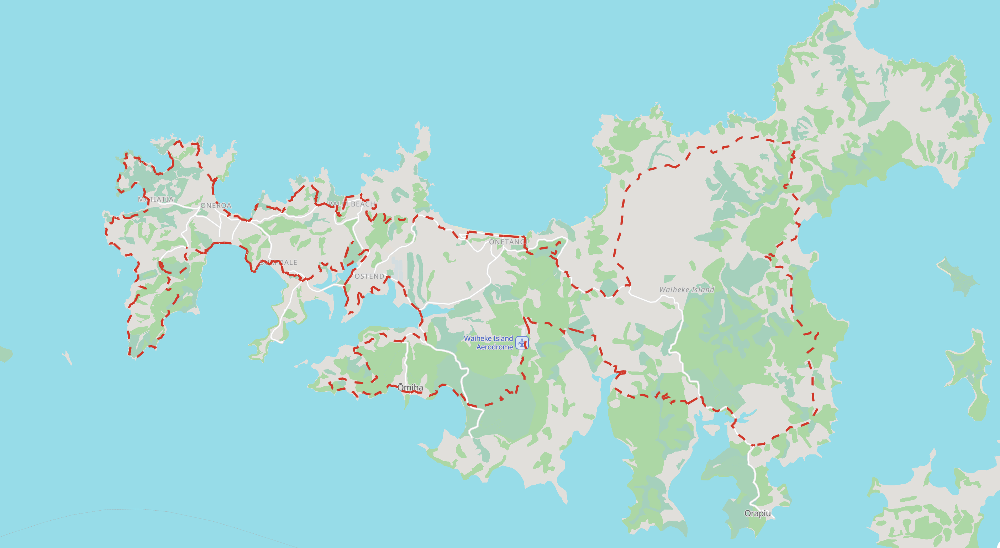

Step 6 - Configure the Stylesheet
Now we'll update MapLibre to load PMTiles support, and configure the stylesheet to match the Protomaps tiles we downloaded.
Configure the Stylesheet
We need to modify our stylesheet style.json to:
- Use the local PMTiles file
- Show the Protomaps basemap layers
- Also show your existing trail layer
View the Protomaps Stylesheet in Maputnik
Maputnik allows you to edit style layers in a GUI, which is helpful since the stylesheet is otherwise over 12,000 lines of JSON when formatted in your text editor.
Maputnik also allows you to make changes and see the results live, without having to switch windows or refresh a browser pane. This is particularly helpful when you are developing a style layer from scratch.
Maputnik is maintained by MapLibre as a way of making it easier to understand available style parameters.
- Go to https://maplibre.org/maputnik/ to view the Maputnik style editor.
- Load the Protomaps Light style under Open > Gallery Styles > Protomaps Light.
- In the map panel on the right pan and zoom in on Auckland, then find Waiheke Island
- Change from Map to Inspect from the drop-down in the top bar — this will allow you to hover and see all of the tile layers and attributes
- Change back from Inspect to Map from the drop-down in the top bar
- Click on Expand in the top left corner to see all the map layers
You should now see the fully expanded list of layers defined in the Protomaps stylesheet. It is a lot!
Note: MapLibre renders these layers in order from top to bottom, so the last layer in the list will render on top.
The position a layer has in the render order is commonly referred to as the z-order.
Observe the z-orders of various layers in this stylesheet. For any basemap the order will generally be:
- Landcover (areas) on the bottom
- Roads / Streams (lines) in the middle
- Labels and Icons (points) on the top
Add Te Ara Hura
We're going to use Maputnik to add the trail styles from style.json in Step 3 into the Protomaps stylesheet.
Make sure Caddy is still running. If not, enter caddy run in the terminal.
Add the GeoJSON Source
-
Click on Data Sources in the top bar of Maputnik. In the panel that pops up, you will see
protomapslisted under Active Sources. -
Add New Source at the bottom of the panel. Input the following:
Source ID:te-ara-huraSource Type: select GeoJSON (URL) from the drop-downURL: open your map in a browser tab, then appendsources/te_ara_hura.geojsonto the URL to verify the file is accessible (no need to download the file). Copy that full URL:- Local:
http://127.0.0.1:1234/sources/te_ara_hura.geojson - Codespaces:
https://xxxxx-1234.preview.app.github.dev/sources/te_ara_hura.geojson
- Local:
- If the file doesn't load, restart Caddy and try again.
Add a Trail Layer
-
Click "Add Layer" at the top of the list of layers
-
Input the id, type, and source as defined in the
style.json, leave source layer blank:- id:
trail-line - type:
line - source:
te-ara-hura
- id:
-
Input the color, width and dasharray as defined in the
style.jsonfrom Step 3 -
Scroll to the JSON Editor at the bottom of the Add Layer panel. Click the
>to expand.
You should see a layer definition like this. If you don't, you can copy and paste this into the JSON box at the bottom of the new layer panel:
{
"id": "trail-line",
"type": "line",
"source": "te-ara-hura",
"paint": {
"line-color": "#e41f18",
"line-width": 3,
"line-dasharray": [2, 2]
}
}
You should also see the trail as a red dashed line circling Waiheke Island.
Adjust the Z-Order
Let's fix the fact that the red dashed trail line is currently rendering on top of all our labels, and bisecting the Waiheke Island Aerodrome.
-
Note the symbols at the start of each layer: diamond for area layers, squiggle for line layers, marker for point layers.
-
Find the layer you just created at the bottom of the list of layers. Note the squiggle next to it, because this is a line layer.
-
Drag Te Ara Hura to group it as the last of the line layers, so that it renders on top of roads and rivers, but under the labels.
Scroll to the bottom of this page — what you see in Maputnik should match the image below.
Export and Save the Stylesheet
Maputnik's Save button downloads the stylesheet as a file to your browser's Downloads folder — it doesn't write directly to your repository.
How you get it into your repo depends on your setup:
If you're working locally:
- Click Save at the top of Maputnik, ignore the API keys, and save the file to your browser's Downloads folder.
- Rename it as
style.json. - If you are using Codespaces, right-click on the top-level directory in the Explorer panel and select Upload. If you are working locally, move the downloaded file into the root of your repository.
- Open it to confirm you see the source and layer definitions you added, then delete the existing
style.jsonand replace it with this one.
Alternative if downloading doesn't work:
- In Maputnik, open the Code Editor panel and copy the full JSON to your clipboard.
- In your code editor, open
style.jsonand replace its entire contents with the copied JSON on your clipboard. - Save the file.
Edit the Stylesheet
Now open style.json in your editor and make the following adjustments:
-
Under
sources→protomaps: delete thetiles, andmaxzoomfields and add:"url": "pmtiles://sources/waiheke_island.pmtiles"Retain the attribution for Protomaps and OpenStreetMap.
-
Under
sources→te-ara-hura: remove the server address from the beginning of the GeoJSON URL, so it reads:"data": "sources/te_ara_hura.geojson" -
(Optional): Replace the
glyphsaddress withlib/fonts/{fontstack}/{range}.pbfto reference the fonts in your repo. -
(Optional): Replace the
spriteaddress withhttps://YOUR-USERNAME.github.io/standalone_web_maps_foss4g2025/lib/sprite/light.
Check the final result — the top of your style.json should look like this:
{
"version": 8,
"name": "style@4.3.0 theme@light lang@en",
"sources": {
"te-ara-hura": {
"type": "geojson",
"data": "sources/te_ara_hura.geojson"
},
"protomaps": {
"type": "vector",
"url": "pmtiles://sources/waiheke_island.pmtiles",
"attribution": "© <a href=\"https://openstreetmap.org\" target=\"_blank\" rel=\"noopener noreferrer\">OpenStreetMap</a>"
}
},
"sprite": "https://YOUR-USERNAME.github.io/standalone_web_maps_foss4g2025/lib/sprite/light",
"glyphs": "lib/fonts/{fontstack}/{range}.pbf",
"layers": [
...
]
}
Test Your Map
-
Make sure Caddy is still running. If not, run
caddy runin a terminal from your repository root. -
Refresh your browser:
- Local:
http://127.0.0.1:1234/index.html - Codespaces: use your forwarded URL (e.g.,
https://xxxxx-1234.preview.app.github.dev/index.html)
- Local:
-
You should see no change yet — verify you still see the trail line. We still need to add PMTiles support to
index.htmlbefore the basemap layers will show up.
Add PMTiles Support
Update your index.html to load PMTiles support.
- Add the PMTiles library to the
<head>section, just below the MapLibre GL JS references:
<head>
<meta charset="UTF-8">
<meta name="viewport" content="width=device-width, initial-scale=1.0">
<title>Te Ara Hura Trail Map</title>
<!-- Local copies of MapLibre GL JS -->
<script src="lib/maplibre-gl.5.10.0.js"></script>
<link href="lib/maplibre-gl.5.10.0.css" rel="stylesheet" />
<!-- PMTiles support -->
<script src="lib/pmtiles.4.3.0.js"></script>
- Activate the PMTiles protocol by adding these lines just above where the map is defined:
<script>
// Initialize PMTiles protocol
const protocol = new pmtiles.Protocol();
maplibregl.addProtocol("pmtiles", protocol.tile);
// Javascript to create a new map using Maplibre GL JS
const map = new maplibregl.Map({
...
});
</script>
- Save your changes to
index.html.
Test Your Map
-
Make sure Caddy is still running. If not, run
caddy runin a terminal from your repository root. -
Refresh your browser:
- Local:
http://127.0.0.1:1234/index.html - Codespaces: use your forwarded URL (e.g.,
https://xxxxx-1234.preview.app.github.dev/index.html)
- Local:
-
You should see:
- The Protomaps basemap (roads, labels, landcover)
- Proper styling with icons and fonts
- The Te Ara Hura trail displayed on top
Troubleshooting
Map doesn't load?
- Check the developer console for errors
- Verify
style.jsonexists in the root directory - Verify file paths in the stylesheet are correct
PMTiles not loading?
- Verify
sources/waiheke_island.pmtilesexists - Check that the PMTiles protocol is initialized in
index.html - Verify the PMTiles URL in
style.jsonusespmtiles://protocol
Verify Your Directory Structure
You should now have all the files you need to render the map. Double-check it looks like this:
standalone_web_maps_foss4g2025/
├── Caddyfile # Web server configuration
├── index.html # Main HTML file for the web map
├── style.json # Source and style for Te Ara Hura and the Protomaps tile layers, fonts and sprites
├── lib/ # Third-party libraries (self-contained)
└── sources/ # Source data files
├── waiheke_island.pmtiles # PMTiles basemap for Waiheke Island (added in Step 5)
└── te_ara_hura.geojson # GeoJSON file for Te Ara Hura trail (added in Step 2)
Commit Your Changes
Add, commit, and push your revised index.html and style.json to your remote fork.
Verify that the map you see via your server (local or Codespaces) and the one you see via GitHub Pages match what you saw in Maputnik (image below).
What You Have Now
At the end of this step, you should have:
style.json— Protomaps basemap styles and your trail layer style- Map displaying the Protomaps basemap with your trail layer
Your Map Preview

This is what your map should look like when you view it in Maputnik